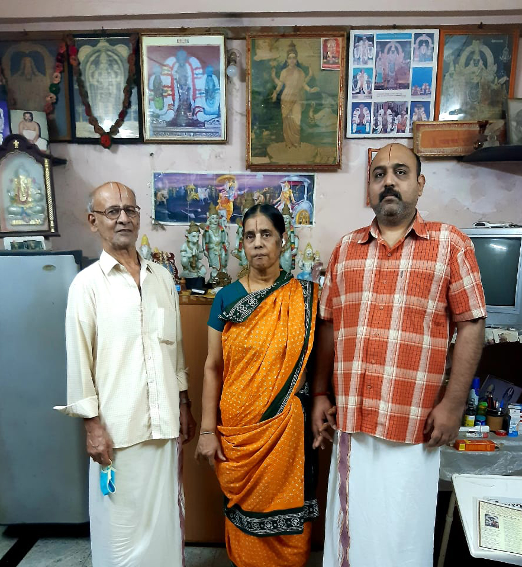

Mythili Tutorials (மைதிலி டுடோரியல்ஸ்)
I am a MS engineering graduate from USA. I will be giving free tuition to vedapatasala students in Maths, Physics and Chemistry so they can give their NIOS exams and get a Xth std or XII std certificate and eventually enroll in normal Bachelors degree courses in engineering, medicine or arts. I can also guide regarding education and job opportunities and career advice.
I live in Triplicane(Thiruvallikeni), Chennai.
Initially tuition will be in my house. Later we can switch to online through phone or laptop.
This is a free service.
People who want to give guru dakshina can choose to give on their own strength.
For non vedapatasala students, tuition and career guidance will be given for a fee.
Contact Details:
Parthasarathy VenkataKrishnan
+91 9381092695 ( can call or whatsapp)
Triplicane, Chennai - 600005
Please share in vaideeham related groups.
வேதபாடசாலை மாணவர்களுக்கு இலவச டியூஷன்
வேதபாடசாலை மாணவர்களுக்கு என்னால் இலவசமாக கணிதம், பிசிக்ஸ், கெமிஸ்ட்ரி சொல்லி தர இயலும்.
இதன் மூலம் பாடசாலை மாணவர்களால் என் ஐ ஓ எஸ் எக்ஸாம் எழுதி டென்த் மற்றும் ட்வெல்த்த் பாஸ் செய்ய உதவி செய்ய இயலும். இதன் மூலம் என்ஜினீயரிங், மருத்துவம் அல்லது மற்ற மேல் படிப்பு படிக்கலாம். என்னால் முடிந்த வரை மேல் படிப்பு மற்றும் வேலை வாய்ப்பு தொடர்பான விஷயங்களை சொல்லி கொடுக்க முடியும்.
முதலில் தொலைபேசியில் அணுகவும் பிறகு டைரெக்ட் அல்லது ஒன்லைன் க்ளாஸெஸ் எது உபயோக படும் என்று தீர்மானிக்கலாம்
இது முற்றிலும் இலவசம்.
வேதபாடசாலை அல்லாத மாணவர்களுக்கு, கல்வி மற்றும் தொழில் வழிகாட்டுதல் கட்டணத்தில் வழங்கப்படும்.
தொடர்பு கொள்ள வேண்டிய முகவரி
பார்த்தசாரதி வேங்கடகிருஷ்ணன் (பி வீ கிருஷ்ணன்)
போன் +91 9381092695 - வாட்சாப் மற்றும் தொலைபேசி
திருவல்லிக்கேணி சென்னை
மற்ற வைதீக குரூப்களில் பகிரவும்